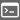

This benchmark will teach you how to program a robot and run the simulation.
The tab entitled Metrics measures your progress on an exercise where you have to program a robot to cover a certain distance. It also allows you to record your performance in the robotbenchmark database (if you are logged-in).
The tab entitled Instructions explains you how to open the source code editor to edit the robot controller program, save it and run the simulation with your modified code.
Program the Thymio II robot to move straight forward and stop. The performance value increases as the robot gets closer to the target position situated exactly one parquetry square in front of it. It will decrease if the robot continues aways from this position. The Instructions tab explains the step-by-step procedure to follow.
During the execution, the sample controller prints some output on the console. You can open the console by clicking on the toolbar button .
The provided controller program drives the Thymio II robot in position control. That is, for each motor of the robot, it defines a target position that the motor has to reach. This position corresponds to an angular position of the wheel and is expressed in radians. Given that each wheel has a radius of 21 millimeters, a target value of 10 on each motor will make the robot move forward by a distance of 10 x 21, that is about 210 millimeters. The size of a parquetry square being 250 millimeters, a target position of 10 will probably not drive the robot at the very correct position...